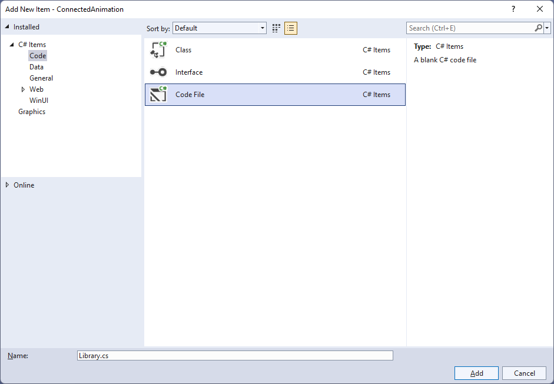
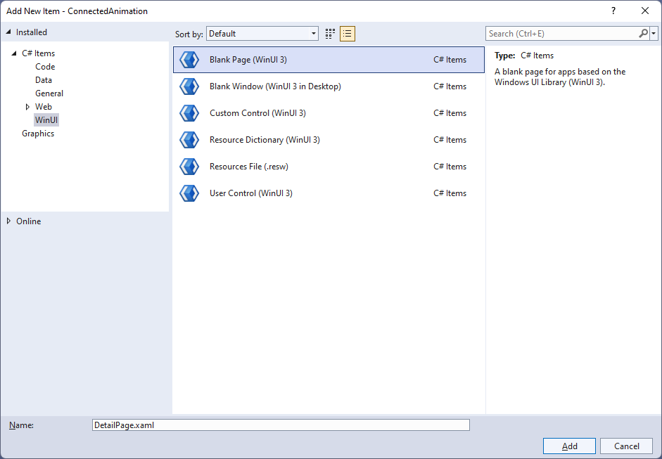
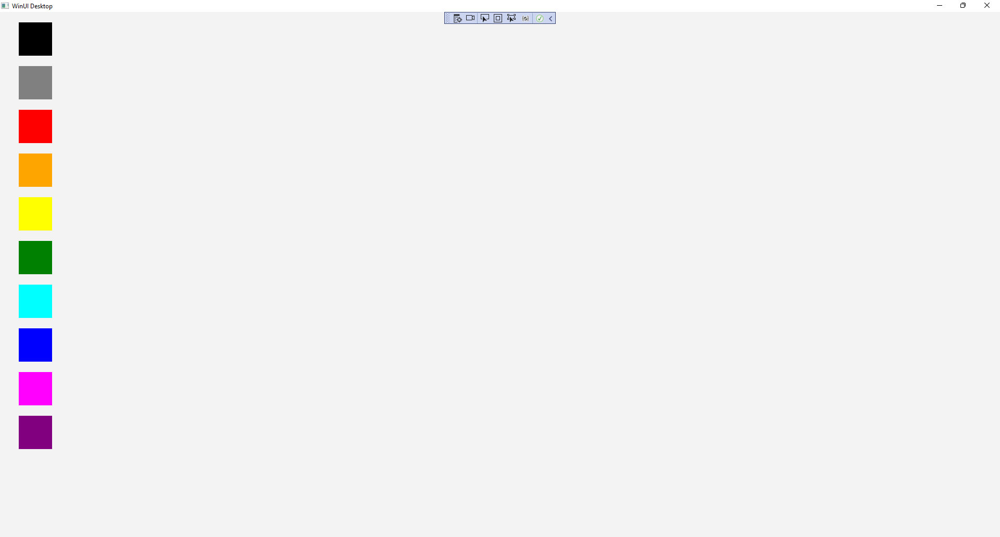
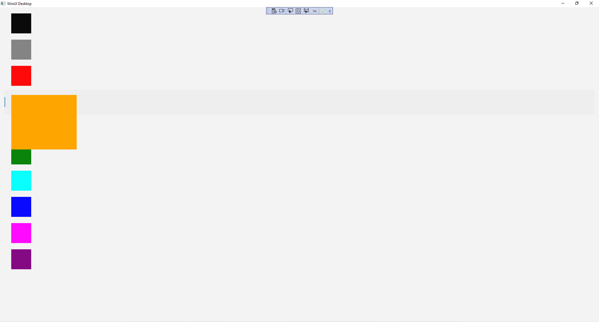

Connection Animation
Learn to use a Connected Animation in Windows App SDK with this Tutorial

Connected Animation shows how you can create Connected Animations between Pages within an application using the Windows App SDK.
Step 1
Follow Setup and Start on how to get Setup and Install what you need for Visual Studio 2022 and Windows App SDK.


Step 2
Then in Visual Studio within Solution Explorer for the Solution, right click on the Project shown below the Solution and then select Add then New Item…

Step 3
Then in Add New Item from the C# Items list, select Code and then select Code File from the list next to this, then type in the name of Library.cs and then Click on Add.

Step 4
You will now be in the View for the Code of Library.cs, within this type the following Code:
using Microsoft.UI.Xaml.Controls;
using Microsoft.UI.Xaml.Media;
using Microsoft.UI.Xaml.Media.Animation;
using Microsoft.UI.Xaml.Shapes;
using System;
using System.Linq;
internal static class Library
{
private const string animate_back = "AnimateBack";
private const string animate_next = "AnimateNext";
public static Frame Frame { get; set; }
public static string Current { get; set; }
public static void Back(ListView listview)
{
var rectangle = listview.Items
.SingleOrDefault(f => (f as Rectangle)
.Tag.Equals(Current)) as Rectangle;
var animation = ConnectedAnimationService
.GetForCurrentView()
.GetAnimation(animate_back);
animation?.TryStart(rectangle);
}
public static Brush Next(object selected)
{
var rectangle = selected as Rectangle;
Current = rectangle.Tag as string;
ConnectedAnimationService
.GetForCurrentView()
.PrepareToAnimate(animate_next, rectangle);
return rectangle.Fill;
}
// Other Methods
}
The Class that has been defined so far in Library.cs has const values along with Properties for Frame and Current then a
Method for Back and Next that will be used to create the Connected Animation when going backwards and forwards between the
Pages using the ConnectedAnimationService.
Step 5
While still in the Class for Library.cs and after the Comment of // Other Methods type in the following other Methods:
public static void From(Rectangle from)
{
ConnectedAnimationService
.GetForCurrentView()
.PrepareToAnimate(animate_back, from);
}
public static void Loaded(Rectangle rectangle)
{
var animation = ConnectedAnimationService
.GetForCurrentView()
.GetAnimation(animate_next);
rectangle.Opacity = 1;
animation?.TryStart(rectangle);
}
public static void Navigate(Type page, object parameter)
{
Frame.Navigate(page, Next(parameter));
}
public static Brush GetBrush(object parameter)
{
return parameter as SolidColorBrush;
}
The Methods for From and Loaded will create the animation flow when going between the Pages and Method for Navigate will use the
Method for Navigate of the Frame and the Method for GetBrush will return a SolidColorBrush from an object of parameter.
Step 6
Then in Visual Studio within Solution Explorer for the Solution, right click on the Project shown below the Solution and then select Add then New Item…
Step 7
Then in Add New Item from the WinUI items list, select Page and then select Blank Page (WinUI 3) from the list next to this, then type in the name of ContentPage.xaml and then Click on Add.
Step 8
Step 9
Then in the XAML for ContentPage.xaml, below <Grid> and above </Grid>, type in the following XAML:
<ListView Name="Display" Margin="10">
<Rectangle HorizontalAlignment="Left" Margin="10"
Width="64" Height="64" Tag="Black" Fill="Black" Tapped="Rectangle_Tapped"/>
<Rectangle HorizontalAlignment="Left" Margin="10"
Width="64" Height="64" Tag="Gray" Fill="Gray" Tapped="Rectangle_Tapped"/>
<Rectangle HorizontalAlignment="Left" Margin="10"
Width="64" Height="64" Tag="Red" Fill="Red" Tapped="Rectangle_Tapped"/>
<Rectangle HorizontalAlignment="Left" Margin="10"
Width="64" Height="64" Tag="Orange" Fill="Orange" Tapped="Rectangle_Tapped"/>
<Rectangle HorizontalAlignment="Left" Margin="10"
Width="64" Height="64" Tag="Yellow" Fill="Yellow" Tapped="Rectangle_Tapped"/>
<Rectangle HorizontalAlignment="Left" Margin="10"
Width="64" Height="64" Tag="Green" Fill="Green" Tapped="Rectangle_Tapped"/>
<Rectangle HorizontalAlignment="Left" Margin="10"
Width="64" Height="64" Tag="Cyan" Fill="Cyan" Tapped="Rectangle_Tapped"/>
<Rectangle HorizontalAlignment="Left" Margin="10"
Width="64" Height="64" Tag="Blue" Fill="Blue" Tapped="Rectangle_Tapped"/>
<Rectangle HorizontalAlignment="Left" Margin="10"
Width="64" Height="64" Tag="Magenta" Fill="Magenta" Tapped="Rectangle_Tapped"/>
<Rectangle HorizontalAlignment="Left" Margin="10"
Width="64" Height="64" Tag="Purple" Fill="Purple" Tapped="Rectangle_Tapped"/>
</ListView>
This ListView contains Rectangle elements of different colours plus each has the Event for Tapped set to the
Method of Rectangle_Tapped which will be triggered when the Rectangle is Tapped or Clicked.
Step 10
Step 11
In the Code for ContentPage.xaml.cs type in the following Code below the end of the Constructor of public ContentPage() { ... }:
protected override void OnNavigatedTo(NavigationEventArgs e)
{
if (e.NavigationMode == NavigationMode.Back)
{
Library.Back(Display);
}
base.OnNavigatedTo(e);
}
private void Rectangle_Tapped(object sender, TappedRoutedEventArgs e)
{
Library.Navigate(typeof(DetailPage), sender);
}
There is the Method for OnNavigatedTo that uses override to change the functionality of the Method for OnNavigatedTo which
will check the NavigationMode and call the Method of Back in the Class of Library and pass through the ListView it also
calls the version of the Method that was Overridden with base.OnNavigatedTo(e) there is also another Method of
Rectangle_Tapped which will call the Method of Navigate in the Class of Library when a Rectangle is Tapped or Clicked.
Step 12
Then in Visual Studio within Solution Explorer for the Solution, right click on the Project shown below the Solution and then select Add then New Item…
Step 13
Then in Add New Item from the WinUI items list, select Page and then select Blank Page (WinUI 3) from the list next to this, then type in the name of DetailPage.xaml and then Click on Add.

Step 14
Step 15
Then in the XAML for DetailPage.xaml, below <Grid> and above </Grid>, type in the following XAML:
<Rectangle Margin="50" Name="Target" Opacity="0" Loaded="Target_Loaded"/>
<CommandBar VerticalAlignment="Bottom">
<AppBarButton Icon="Back" Label="Back" Click="Back_Click"/>
</CommandBar>
There is Rectangle element of Target along with an AppBarButton set to a Method of Back_Click which will be triggered when the AppBarButton is Clicked.
Step 16
Step 17
In the Code for DetailPage.xaml.cs type in the following Code below the end of the Constructor of public DetailPage() { ... }:
protected override void OnNavigatedTo(NavigationEventArgs e)
{
Target.Fill = Library.GetBrush(e.Parameter);
}
protected override void OnNavigatingFrom(NavigatingCancelEventArgs e)
{
if (e.NavigationMode == NavigationMode.Back)
Library.From(Target);
base.OnNavigatingFrom(e);
}
private void Target_Loaded(object sender, RoutedEventArgs e)
{
Library.Loaded(Target);
}
private void Back_Click(object sender, RoutedEventArgs e)
{
Library.Frame.GoBack();
}
There is a Method for OnNavigatedTo that uses override to change the functionality of the Method for OnNavigatedTo which will set Fill for the Rectangle
element of Target using the Method of GetBrush from the Class for Library there is also an override for OnNavigatingFrom which will call the Method for
From in the Class for Library when navigating backwards. There is also a Method of Target_Loaded for when the Rectangle element of Target has loaded and
there is the Method for when the AppBarButton is Clicked of Back_Click which calls the Method of GoBack for the Frame in the Class for Library.
Step 18
Step 19
In the XAML for MainWindow.xaml there will be some XAML for a StackPanel, this should be Removed:
<StackPanel Orientation="Horizontal"
HorizontalAlignment="Center" VerticalAlignment="Center">
<Button x:Name="myButton" Click="myButton_Click">Click Me</Button>
</StackPanel>
Step 20
While still in the XAML for MainWindow.xaml above </Window>, type in the following XAML:
<Frame Name="Frame"/>
Step 21
Step 22
In the Code for MainWindow.xaml.cs there be a Method of myButton_Click(...) this should be Removed by removing the following:
private void myButton_Click(object sender, RoutedEventArgs e)
{
myButton.Content = "Clicked";
}
Step 23
Once myButton_Click(...) has been removed, within the Constructor of public MainWindow() { ... } and below the line of this.InitializeComponent(); type in the following Code:
Library.Frame = Frame;
Library.Frame.Navigate(typeof(ContentPage));
The Constructor of public MainWindow() { ... } should look like the following:
public MainWindow()
{
this.InitializeComponent();
Library.Frame = Frame;
Library.Frame.Navigate(typeof(ContentPage));
}
These set up the Property for the Frame and call the Method for Navigate in the class of Library.
Step 24
Step 25
Once running you should see the Rectangle elements.

Step 26
You can Click on any of the Rectangle elements to switch from the Content Page to the Detail Page and observe the Connected Animation.

Step 27